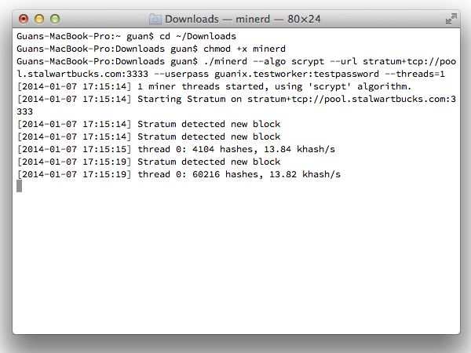

It has already become difficult to solo mine SBX using a CPU. We have set up an experimental pool. Hopefully someone with more experience running pools will create alternative pools.
Set up an account and click on the verification email. Then go to “Add Workers” and create a worker. If your username is foo, a worker name could be bar1.
The URL for connecting to the miner is stratum+tcp://pool.stalwartbucks.com:3333. If you use the popular cpuminer, you would invoke it like this:
./minerd --algo scrypt --url stratum+tcp://pool.stalwartbucks.com:3333 --userpass foo.bar1:password
(All in one line.)
If you download cpuminer and extract the Zip file (your browser may do this automatically), you will find a file called minerd in your Downloads folder.
Launch a Terminal (in Applications → Utilities) and type in the following:
cd ~/Downloads↩
chmod +x ./minerd↩
./minerd --algo scrypt --url stratum+tcp://pool.stalwartbucks.com:3333 --userpass foo.bar1:guanrocks↩
Replace the parts in red. If you only want to mine using one thread, you could add --threads=1.
Here’s how it might look:
